Role
Graphic designer
Client
Klein Media
Tools
Figma, SVG
Type
Internship project
A nine-icon set for Klein Media’s services, redrawn after feedback from the team.
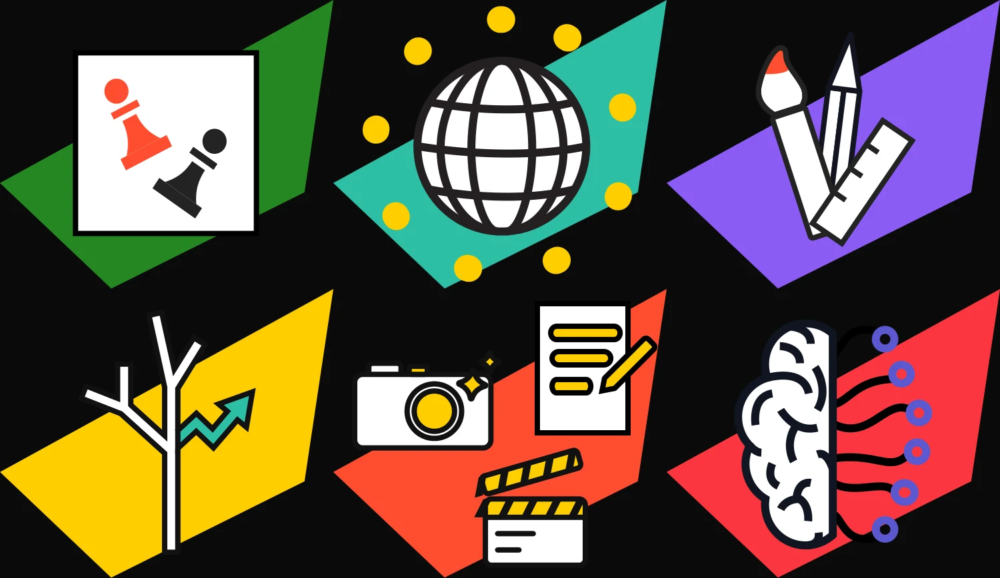
Graphic designer
Klein Media
Figma, SVG
Internship project
Klein Media needed one consistent icon set for its services, from strategy and websites to social media and AI systems. Each icon had to read at small sizes and still feel like part of the brand.
I drew a first set in white line work with a single red accent. After feedback from the team I made a second version with a richer palette, clearer metaphors and alternative directions for two of the icons. Every icon exists for dark and light backgrounds.
The compass became a target with a chess piece, so it reads as strategy.
The two growth platforms needed to be easier to tell apart: B2B keeps the briefcase, B2C gets a shopping cart.
“Brand authority” became “brand identity”, with three directions explored: clear space, swatch and stamp.
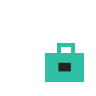
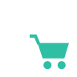
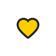
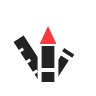
Version 1 on the left, version 2 on the right
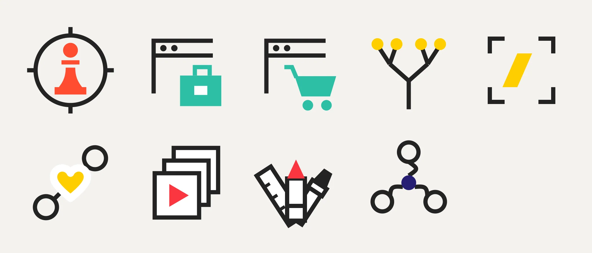
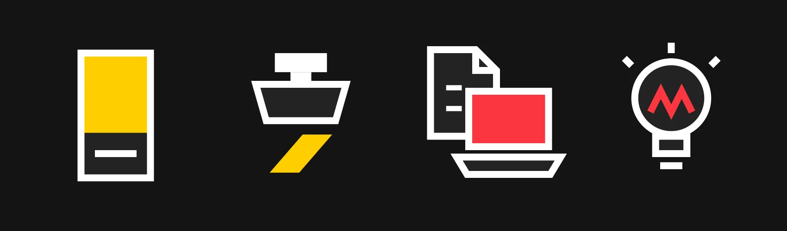